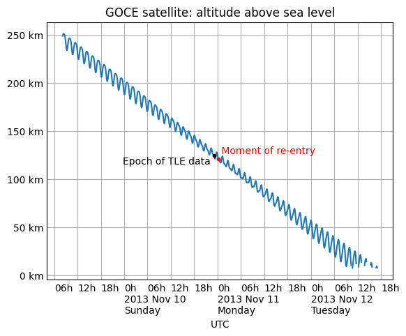

Skyfield: Home • Table of Contents • Changelog • API Reference
This section of the documentation will gradually accumulate example scripts for producing images from Skyfield computations.
Note that these example scripts are written for fairly recent versions of matplotlib. If you try running them on a system with an older version of the library, you might see errors — in particular with how they specify colors, in which case you can try omitting those parameters to get the script running. In any case, these are only intended to be a starting point for building your own scripts, either with matplotlib or whatever other plotting library you prefer.
The morning sky and evening sky are popular subjects for astronomy charts, but they involve a subtlety: unless the observer is at the equator, the sun rises and sets at a different time each day. So whether a chart depicts “the evening sky at sunset” or “45 minutes after sunset” or “an hour after sunset”, its single horizon line represents a different time on each successive day.
Drawing a morning or evening chart therefore involves two steps. First compute all the times of sunrise or sunset over the months you are interested in. Then generate the altitude and azimuth of the target body at exactly those times for your chart.
This example script generates the Venus chart that you can see above. A few notes:
import numpy as np
import matplotlib.pyplot as plt
from matplotlib.colors import LinearSegmentedColormap
from skyfield import almanac
from skyfield.api import load, wgs84
from skyfield.magnitudelib import planetary_magnitude
MONTH_NAMES = '0 Jan Feb Mar Apr May Jun Jul Aug Sep Oct Nov Dec'.split()
# Figure out the times of sunset over our range of dates.
eph = load('de421.bsp')
earth, sun, venus = eph['earth'], eph['sun'], eph['venus']
observer = wgs84.latlon(+40.0, 0.0)
ts = load.timescale()
start, end = ts.utc(2021, 3, 7), ts.utc(2022, 2, 7)
f = almanac.sunrise_sunset(eph, observer)
t, y = almanac.find_discrete(start, end, f)
sunsets = (y == 0)
t = t[sunsets]
# For each moment of sunset, ask Skyfield for the month number, the day
# number, and for Venus’s altitude, azimuth, and magnitude.
year, month, day, hour, minute, second = t.utc
month = month.astype(int)
day = day.astype(int)
apparent = (earth + observer).at(t).observe(venus).apparent()
alt, az, distance = apparent.altaz()
x, y = az.degrees, alt.degrees
m = planetary_magnitude(apparent)
# Convert magnitude to marker size, remembering that smaller magnitude
# numbers mean a brighter Venus (and thus a larger marker).
maxmag = max(m)
minmag = min(m)
size = 40 - 30 * (m - minmag) / (maxmag - minmag)
# Start with a smooth curve tracing Venus's motion.
fig, ax = plt.subplots(figsize=[9, 3])
ax.plot(x, y, c='#fff6', zorder=1)
# Next, put a circle representing Venus on the 1st of the month and on
# every fifth day after that. (Except for the 30th, which would sit too
# close to the 1st of the following month.)
fives = (day % 5 == 1) & (day < 30)
ax.scatter(x[fives], y[fives], size[fives], 'white',
edgecolor='black', linewidth=0.25, zorder=2)
# Put day and month labels off to the sides of the curve.
offset_x, offset_y = 10, 8
for i in np.flatnonzero(fives):
if i == 0:
continue # We can’t compute dx/dy with no previous point.
# Build a unit vector pointing in the direction Venus is traveling.
day_i = day[i]
xi = x[i]
yi = y[i]
dx = xi - x[i-1]
dy = yi - y[i-1]
length = np.sqrt(dx*dx + dy*dy)
dx /= length
dy /= length
# Offset the text at a right angle to the direction of travel.
side = 'right' if (year[i], month[i]) < (2021, 10) else 'left'
if side == 'left':
xytext = - offset_x*dy, offset_y*dx
else:
xytext = offset_x*dy, - offset_y*dx
# Label the dates 1, 11, and 21.
if day_i in (1, 11, 21):
ax.annotate(day_i, (xi, yi), c='white', ha='center', va='center',
textcoords='offset points', xytext=xytext, size=8)
# On the 15th of each month, put the month name.
if day_i == 16:
name = MONTH_NAMES[month[i]]
ax.annotate(name, (xi, yi), c='white', ha='center', va='center',
textcoords='offset points', xytext=2.2 * np.array(xytext))
# Finally, some decorations.
points = 'N NE E SE S SW W NW'.split()
for i, name in enumerate(points):
xy = 45 * i, 1
ax.annotate(name, xy, c='white', ha='center', size=12, weight='bold')
ax.set(
aspect=1.0,
title='Venus at sunset for 40°N latitude, April 2021 – January 2022',
xlabel='Azimuth (°)',
ylabel='Altitude (°)',
xlim=(195, 300),
ylim=(0, max(y) + 10.0),
xticks=np.arange(210, 300, 15),
)
sky = LinearSegmentedColormap.from_list('sky', ['black', 'blue'])
extent = ax.get_xlim() + ax.get_ylim()
ax.imshow([[0,0], [1,1]], cmap=sky, interpolation='bicubic', extent=extent)
fig.savefig('venus_evening_chart.png')
Here is a stand-alone script that brings together four different data sources — a planetary ephemeris, a comet orbit database, a large star catalog, and constellation diagrams — to plot the course of Comet NEOWISE across Ursa Major over one week of July 2020:
Its code includes many design decisions and presentation tweaks that you will probably want to adjust for your own project. Use the script as a starting point:
import numpy as np
from matplotlib import pyplot as plt
from matplotlib.collections import LineCollection
from skyfield.api import Star, load
from skyfield.constants import GM_SUN_Pitjeva_2005_km3_s2 as GM_SUN
from skyfield.data import hipparcos, mpc, stellarium
from skyfield.projections import build_stereographic_projection
# The comet is plotted on several dates `t_comet`. But the stars only
# need to be drawn once, so we take the middle comet date as the single
# time `t` we use for everything else.
ts = load.timescale()
t_comet = ts.utc(2020, 7, range(17, 27))
t = t_comet[len(t_comet) // 2] # middle date
# An ephemeris from the JPL provides Sun and Earth positions.
eph = load('de421.bsp')
sun = eph['sun']
earth = eph['earth']
# The Minor Planet Center data file provides the comet orbit.
with load.open(mpc.COMET_URL) as f:
comets = mpc.load_comets_dataframe(f)
comets = (comets.sort_values('reference')
.groupby('designation', as_index=False).last()
.set_index('designation', drop=False))
row = comets.loc['C/2020 F3 (NEOWISE)']
comet = sun + mpc.comet_orbit(row, ts, GM_SUN)
# The Hipparcos mission provides our star catalog.
with load.open(hipparcos.URL) as f:
stars = hipparcos.load_dataframe(f)
# And the constellation outlines come from Stellarium. We make a list
# of the stars at which each edge stars, and the star at which each edge
# ends.
url = ('https://raw.githubusercontent.com/Stellarium/stellarium/master'
'/skycultures/western_SnT/constellationship.fab')
with load.open(url) as f:
constellations = stellarium.parse_constellations(f)
edges = [edge for name, edges in constellations for edge in edges]
edges_star1 = [star1 for star1, star2 in edges]
edges_star2 = [star2 for star1, star2 in edges]
# We will center the chart on the comet's middle position.
center = earth.at(t).observe(comet)
projection = build_stereographic_projection(center)
field_of_view_degrees = 45.0
limiting_magnitude = 7.0
# Now that we have constructed our projection, compute the x and y
# coordinates that each star and the comet will have on the plot.
star_positions = earth.at(t).observe(Star.from_dataframe(stars))
stars['x'], stars['y'] = projection(star_positions)
comet_x, comet_y = projection(earth.at(t_comet).observe(comet))
# Create a True/False mask marking the stars bright enough to be
# included in our plot. And go ahead and compute how large their
# markers will be on the plot.
bright_stars = (stars.magnitude <= limiting_magnitude)
magnitude = stars['magnitude'][bright_stars]
marker_size = (0.5 + limiting_magnitude - magnitude) ** 2.0
# The constellation lines will each begin at the x,y of one star and end
# at the x,y of another. We have to "rollaxis" the resulting coordinate
# array into the shape that matplotlib expects.
xy1 = stars[['x', 'y']].loc[edges_star1].values
xy2 = stars[['x', 'y']].loc[edges_star2].values
lines_xy = np.rollaxis(np.array([xy1, xy2]), 1)
# Time to build the figure!
fig, ax = plt.subplots(figsize=[9, 9])
# Draw the constellation lines.
ax.add_collection(LineCollection(lines_xy, colors='#00f2'))
# Draw the stars.
ax.scatter(stars['x'][bright_stars], stars['y'][bright_stars],
s=marker_size, color='k')
# Draw the comet positions, and label them with dates.
comet_color = '#f00'
offset = 0.002
ax.plot(comet_x, comet_y, '+', c=comet_color, zorder=3)
for xi, yi, tstr in zip(comet_x, comet_y, t_comet.utc_strftime('%m/%d')):
tstr = tstr.lstrip('0')
text = ax.text(xi + offset, yi - offset, tstr, color=comet_color,
ha='left', va='top', fontsize=9, weight='bold', zorder=-1)
text.set_alpha(0.5)
# Finally, title the plot and set some final parameters.
angle = np.pi - field_of_view_degrees / 360.0 * np.pi
limit = np.sin(angle) / (1.0 - np.cos(angle))
ax.set_xlim(-limit, limit)
ax.set_ylim(-limit, limit)
ax.xaxis.set_visible(False)
ax.yaxis.set_visible(False)
ax.set_aspect(1.0)
ax.set_title('Comet NEOWISE {} through {}'.format(
t_comet[0].utc_strftime('%Y %B %d'),
t_comet[-1].utc_strftime('%Y %B %d'),
))
# Save.
fig.savefig('neowise-finder-chart.png', bbox_inches='tight')
If you choose a different rendering engine instead of the venerable but rather ornery and complicated matplotlib, then of course the plotting calls you make will be completely different. But the basic data loading and filtering will be the same, so hopefully the script will still help get you started in targeting a more modern plotting library.
Here is the decreasing altitude of a satellite as its orbit decayed and it re-entered the atmosphere above the Pacific Ocean:
The code to produce the diagram using matplotlib, including custom tick marks that are based on the date, is:
import numpy as np
from matplotlib import pyplot as plt
from matplotlib.dates import HourLocator, DateFormatter
from skyfield.api import load, EarthSatellite
# Labels for both date and hour on the x axis, and km on y.
def label_dates_and_hours(axes):
axes.xaxis.set_major_locator(HourLocator([0]))
axes.xaxis.set_minor_locator(HourLocator([0, 6, 12, 18]))
axes.xaxis.set_major_formatter(DateFormatter('0h\n%Y %b %d\n%A'))
axes.xaxis.set_minor_formatter(DateFormatter('%Hh'))
for label in ax.xaxis.get_ticklabels(which='both'):
label.set_horizontalalignment('left')
axes.yaxis.set_major_formatter('{x:.0f} km')
axes.tick_params(which='both', length=0)
# Load the satellite's final TLE entry.
sat = EarthSatellite(
'1 34602U 09013A 13314.96046236 .14220718 20669-5 50412-4 0 930',
'2 34602 096.5717 344.5256 0009826 296.2811 064.0942 16.58673376272979',
'GOCE',
)
# Build the time range `t` over which to plot, plus other values.
ts = load.timescale()
t = ts.tt_jd(np.arange(sat.epoch.tt - 2.0, sat.epoch.tt + 2.0, 0.005))
reentry = ts.utc(2013, 11, 11, 0, 16)
earth_radius_km = 6371.0
# Compute geocentric positions for the satellite.
g = sat.at(t)
valid = [m is None for m in g.message]
# Start a new figure.
fig, ax = plt.subplots()
# Draw the blue curve.
x = t.utc_datetime()
y = np.where(valid, g.distance().km - earth_radius_km, np.nan)
ax.plot(x, y)
# Label the TLE epoch.
x = sat.epoch.utc_datetime()
y = sat.at(sat.epoch).distance().km - earth_radius_km
ax.plot(x, y, 'k.')
ax.text(x, y - 9, 'Epoch of TLE data ', ha='right')
# Label the official moment of reentry.
x = reentry.utc_datetime()
y = sat.at(reentry).distance().km - earth_radius_km
ax.plot(x, y, 'r.')
ax.text(x, y + 6, ' Moment of re-entry', c='r')
# Grid lines and labels.
ax.grid(which='both')
ax.set(title='GOCE satellite: altitude above sea level', xlabel='UTC')
label_dates_and_hours(ax)
# Render the plot to a PNG file.
fig.savefig('goce-reentry.png', bbox_inches='tight')